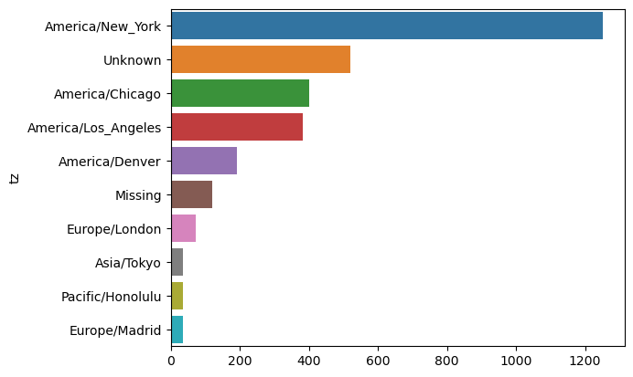
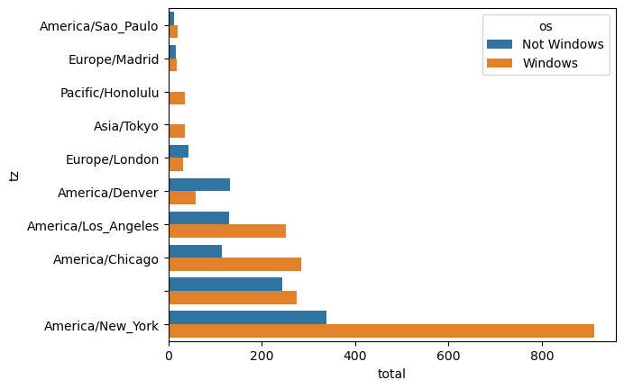
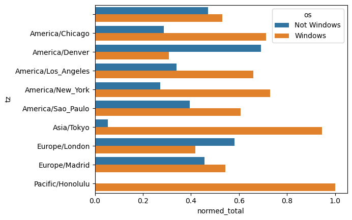

来自 Bitly 的 USA.gov 数据
数据背景：2011年, URL缩短服务Bitly跟美国政府⽹站USA.gov合作，提供了⼀份从⽣成.gov或.mil短链接的⽤户那⾥收集来的匿名数据。在2011年, 除实时数据之外, 还可以下载⽂本⽂件形式的每⼩时快照。2017年这项服务已经关闭。
以每⼩时快照为例, ⽂件中各⾏的格式为JSON（即JavaScriptObject Notation, 这是⼀种常⽤的Web数据格式）。
我们取一行数据进行格式化之后分析:
1 | { |
这是其中的一行数据, 我们可以通过 Python 的 JSON 模块来处理
1 | import json |
{'a': 'Mozilla/5.0 (Windows NT 6.1; WOW64) AppleWebKit/535.11 (KHTML, like Gecko) Chrome/17.0.963.78 Safari/535.11', 'c': 'US', 'nk': 1, 'tz': 'America/New_York', 'gr': 'MA', 'g': 'A6qOVH', 'h': 'wfLQtf', 'l': 'orofrog', 'al': 'en-US,en;q=0.8', 'hh': '1.usa.gov', 'r': 'http://www.facebook.com/l/7AQEFzjSi/1.usa.gov/wfLQtf', 'u': 'http://www.ncbi.nlm.nih.gov/pubmed/22415991', 't': 1331923247, 'hc': 1331822918, 'cy': 'Danvers', 'll': [42.576698, -70.954903]}
时区统计
纯 python
首先使用列表推导式取出一组时区:
1 | time_zones = [rec['tz'] for rec in records if 'tz' in rec] # 不是每组数据都有时区，要判断一下 |
['America/New_York', 'America/Denver', 'America/New_York', 'America/Sao_Paulo', 'America/New_York', 'America/New_York', 'Europe/Warsaw', '', '', '']
对时区计数
纯代码
1 | # 使用类似桶排序的方法 |
1251
Python-collections 库
defaltdict
defaultdict是Python中内置dict类的一个子类，它提供了一种更方便的方式来处理缺失键（key）的情况。与普通的字典不同，defaultdict在初始化时需要指定一个默认工厂函数（default factory function），该函数用于提供缺失键的默认值。当在字典中查找某个值时，如果key不存在，defaultdict会返回默认工厂函数的值，而不是抛出一个KeyError错误。
defaultdict的使用方式很简单，只需要在创建时传入一个工厂函数即可，如：dict = defaultdict(factory_function)。factory_function可以是任何可调用的对象，比如list、set、str等，当key不存在时，会返回该工厂函数的默认值。例如，如果factory_function是list，那么当key不存在时，会返回一个空列表。
需要注意的是，defaultdict的行为与普通字典dict非常相似，但它提供了更好的错误处理机制，可以避免在查找不存在的key时出现KeyError错误。因此，在处理可能存在缺失键的字典时，使用defaultdict可能是一个更好的选择。
1 | from collections import Counter, defaultdict |
collections.Counter
1 | from collections import Counter |
[('America/New_York', 1251), ('', 521), ('America/Chicago', 400), ('America/Los_Angeles', 382), ('America/Denver', 191), ('Europe/London', 74), ('Asia/Tokyo', 37), ('Pacific/Honolulu', 36), ('Europe/Madrid', 35), ('America/Sao_Paulo', 33)]
使用 Pandas
数据处理
1 | import pandas as pd |
<class 'pandas.core.frame.DataFrame'>
RangeIndex: 3560 entries, 0 to 3559
Data columns (total 18 columns):
# Column Non-Null Count Dtype
--- ------ -------------- -----
0 a 3440 non-null object
1 c 2919 non-null object
2 nk 3440 non-null float64
3 tz 3440 non-null object
4 gr 2919 non-null object
5 g 3440 non-null object
6 h 3440 non-null object
7 l 3440 non-null object
8 al 3094 non-null object
9 hh 3440 non-null object
10 r 3440 non-null object
11 u 3440 non-null object
12 t 3440 non-null float64
13 hc 3440 non-null float64
14 cy 2919 non-null object
15 ll 2919 non-null object
16 _heartbeat_ 120 non-null float64
17 kw 93 non-null object
dtypes: float64(4), object(14)
memory usage: 500.8+ KB
None
0 America/New_York
1 America/Denver
2 America/New_York
3 America/Sao_Paulo
4 America/New_York
5 America/New_York
6 Europe/Warsaw
7
8
9
Name: tz, dtype: object
此处的输出为摘要试图，主要用于较大的 DataFrame 对象。
我们可以对 Serires 使用 value_counts()
1 | tz_counts = frame['tz'].value_counts() |
tz
America/New_York 1251
521
America/Chicago 400
America/Los_Angeles 382
America/Denver 191
Europe/London 74
Asia/Tokyo 37
Pacific/Honolulu 36
Europe/Madrid 35
America/Sao_Paulo 33
Name: count, dtype: int64
Matpilotlib 可视化
1 | clean_tz = frame["tz"].fillna("Missing") # 将 frame 中的 tz 列中的 NaN 替换为 'Missing' |
<Axes: ylabel='tz'>

'a’字段处理-设备信息
含有执行的浏览器，设备，应用程序的相关信息
分离字段第一节
1 | results = pd.Series(x.split()[0] for x in frame.a.dropna()) # dropna: without missing value |
0 Mozilla/5.0
1 GoogleMaps/RochesterNY
2 Mozilla/4.0
3 Mozilla/5.0
4 Mozilla/5.0
dtype: object
Mozilla/5.0 2594
Mozilla/4.0 601
GoogleMaps/RochesterNY 121
Opera/9.80 34
TEST_INTERNET_AGENT 24
GoogleProducer 21
Mozilla/6.0 5
BlackBerry8520/5.0.0.681 4
Name: count, dtype: int64
按照是非 Windows 系统
简单起见我们直接判断字符串中有没有 “Windows”
1 | cframe = frame[frame.a.notnull()] |
0 Windows
1 Not Windows
2 Windows
3 Not Windows
4 Windows
Name: os, dtype: object
/tmp/ipykernel_14789/596734316.py:4: SettingWithCopyWarning:
A value is trying to be set on a copy of a slice from a DataFrame.
Try using .loc[row_indexer,col_indexer] = value instead
See the caveats in the documentation: https://pandas.pydata.org/pandas-docs/stable/user_guide/indexing.html#returning-a-view-versus-a-copy
cframe['os'] = np.where(cframe['a'].str.contains('Windows'), 'Windows', 'Not Windows')
根据时区和操作系统分组
1 | by_tz_os = cframe.groupby(['tz', 'os']) |
os Not Windows Windows
tz
245.0 276.0
Africa/Cairo 0.0 3.0
Africa/Casablanca 0.0 1.0
Africa/Ceuta 0.0 2.0
Africa/Johannesburg 0.0 1.0
Africa/Lusaka 0.0 1.0
America/Anchorage 4.0 1.0
America/Argentina/Buenos_Aires 1.0 0.0
America/Argentina/Cordoba 0.0 1.0
America/Argentina/Mendoza 0.0 1.0
选取最常见的时区
.sum(1) 是一个沿着轴1（即行）求和的操作。这将对agg_counts DataFrame的每一行求和，返回一个pandas Series，其中包含了每一行的和。
1 | indexer = agg_counts.sum(1).argsort() |
tz
24
Africa/Cairo 20
Africa/Casablanca 21
Africa/Ceuta 92
Africa/Johannesburg 87
Africa/Lusaka 53
America/Anchorage 54
America/Argentina/Buenos_Aires 57
America/Argentina/Cordoba 26
America/Argentina/Mendoza 55
dtype: int64
通过 take 按照顺序求最后十行的最大值
1 | count_subset = agg_counts.take(indexer[-10:]) |
os Not Windows Windows
tz
America/Sao_Paulo 13.0 20.0
Europe/Madrid 16.0 19.0
Pacific/Honolulu 0.0 36.0
Asia/Tokyo 2.0 35.0
Europe/London 43.0 31.0
America/Denver 132.0 59.0
America/Los_Angeles 130.0 252.0
America/Chicago 115.0 285.0
245.0 276.0
America/New_York 339.0 912.0
使用 pandas 的 nlargest 方法
1 | print(agg_counts.sum(1).nlargest(10)) |
tz
America/New_York 1251.0
521.0
America/Chicago 400.0
America/Los_Angeles 382.0
America/Denver 191.0
Europe/London 74.0
Asia/Tokyo 37.0
Pacific/Honolulu 36.0
Europe/Madrid 35.0
America/Sao_Paulo 33.0
dtype: float64
绘图表示
1 | count_subset = count_subset.stack() |
<Axes: xlabel='total', ylabel='tz'>

windows 在小分组中的相对比例
1 | def norm_total(group): |
<Axes: xlabel='normed_total', ylabel='tz'>
